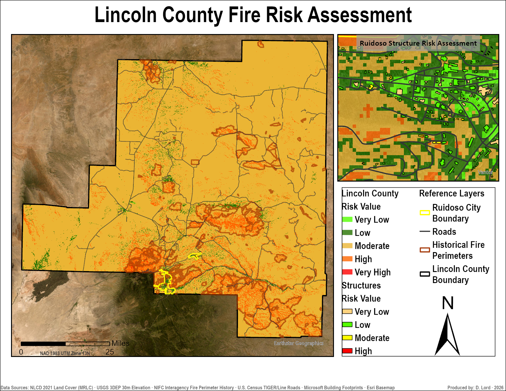

About
GIS professional with three years of experience supporting
large-scale projects in the utility, renewable-energy, oil and gas,
infrastructure, and public sectors. My work includes spatial
analysis, enterprise spatial-data editing and management, GIS
automation, custom deliverables, and data QA/QC.
I am a Senior GIS Technician with Contract Land Staff and a
dedicated GIS resource supporting Duke Energy's multi-state ROW
modernization initiative. I collaborate with geographically
distributed teams while independently managing assigned GIS
production, data-cleanup, and QA/QC workflows.
Based in Houston, TX — the heart of the energy industry.
Skills
GIS Software
ArcGIS Pro, ArcGIS Online (AGOL), Google Earth Pro,
QGIS
Database & Programming
Microsoft SQL Server 2016/2022, Python scripting (ArcPy), workflow automation, Microsoft Excel, Microsoft
SharePoint
Data Management
Enterprise geodatabase editing and data management, file geodatabases, shapefiles, CAD
data conversion, data QA/QC
Specialized Skills
COGO/Deed plotting, metes & bounds analysis,
legal description interpretation, utility ROW mapping, siting and parcel suitability analysis
Projects
Houston Power Outage Vulnerability Explorer
Tools: ArcGIS Pro · Weighted Overlay · Spatial Join · Near Analysis · GeoJSON · Leaflet.js · HTML/CSS · GitHub Pages
An interactive Web GIS application identifying Harris County census
tracts that may face heightened vulnerability during power outages.
Developed in ArcGIS Pro, the analysis combines CDC/ATSDR social
vulnerability data, FEMA flood-hazard data, and proximity to publicly
mapped electrical substations using a weighted scoring model.
Each tract received a composite score based on social vulnerability
(50%), high-risk flood exposure (30%), and distance to the nearest
electrical substation (20%). Greater distance was treated as an
indicator of increased potential vulnerability. The results were
classified into five categories and published as an interactive
Leaflet application with address search, selectable infrastructure
and flood layers, and tract-level details.
- Weighted vulnerability model across 1,130 census tracts
- Data sourced from CDC, FEMA NFHL, and HIFLD
- Interactive hover, layer toggles, and address search
- Deployed as a public web app via GitHub Pages
Limitations: This model is a screening tool, not a
prediction of outage occurrence or restoration time. Substation
proximity does not represent electrical connectivity, service
territory, infrastructure condition, system capacity, or restoration
priority. Results depend on the project's weighting assumptions and
the accuracy and currency of the public datasets used.
Lincoln County Wildfire Risk Assessment
Tools: ArcGIS Pro · Spatial Analyst · Weighted Overlay · Python (ArcPy)
Produced a composite wildfire risk surface for Lincoln County, New Mexico (home of Smokey Bear!)
integrating five spatial risk factors: vegetation fuel load (NLCD 2021),
terrain slope, aspect, historical fire perimeters (NIFC), and road proximity.
Reclassified each factor to a 1–5 risk scale and combined using weighted overlay
analysis (35/25/15/15/10 weighting). A structure-level risk assessment was
performed for the Ruidoso urban area using Zonal Statistics, identifying
structures within high and very high risk zones.
All data sourced from public repositories including MRLC, USGS National Map,
NIFC, and U.S. Census TIGER/Line. Coordinate system: NAD 1983 UTM Zone 13N.
Cell size: 30 meters.

- 5-factor weighted overlay risk model
- Structure-level risk assessment for Ruidoso
- 100% public data — fully reproducible methodology
- 30m resolution county-wide risk surface
GIS Workflow Automation Toolbox
Tools: Python · ArcPy · ArcGIS Pro · Excel · CSV · Workflow Automation · GIS Data QA/QC
A Python/ArcPy toolbox developed for recurring right-of-way GIS
production workflows in ArcGIS Pro. The toolbox standardizes two
repetitive processes: multi-field easement attribution and project
metrics reporting.
Easement Attributor
Integrates a user-selected Excel line list with an easement layer and
populates 23 designated location, ownership, document, and project
attributes for matching records. The workflow evolved from a script
run in the ArcGIS Pro Python window into a reusable geoprocessing
tool that incorporates spreadsheet conversion, joining, and
multi-field attribution into the standard ArcGIS Pro interface.
Used multiple times per day during active production, it eliminates
repeated join setup and code execution while improving consistency
and repeatability.
Metrics Report Writer
Consolidates a multi-step reporting workflow that previously
required separate intersect, dissolve, acreage-calculation,
owner-frequency, and line-mileage operations. Using route, corridor,
and parcel layers, the tool calculates standardized project metrics
and exports them to a user-selected CSV report. These reports are
requested by clients several times per month, making consistent and
repeatable report preparation especially valuable.
- Reusable ArcGIS Pro geoprocessing tools built with Python and ArcPy
- Automated attribution of 23 designated easement fields
- Standardized route, acreage, and ownership metrics in a CSV report
- Reduced repeated setup and consolidated multi-step GIS workflows
Confidentiality: Developed for internal GIS
production workflows. Public descriptions use generalized field
structures to protect employer and client confidentiality.
Production source code, data, and proprietary workflow details are
not publicly available.
Contact
Feel free to reach out via email or connect with me on LinkedIn.